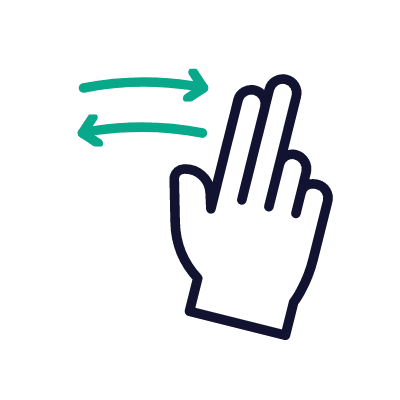

<div class="container">
  <br>
  <a class="fw-bold m-4 mt-5  text-dark text-decoration-none " [routerLink]="['/admin/pictures/search_vin']">
    <i class="fas fa-arrow-left"></i> volver
  </a>
  <div class="containerInput">
    <h1>Imágenes para editar</h1>
  </div>
  <div class="containerInput">
    <button type="button" mat-raised-button (click)="fileInput.click()">
      Seleccione la Imagen
    </button>
    <input
      hidden
      accept="image/*"
      multiple
      #fileInput
      type="file"
      id="fileInput"
      (change)="selectFiles($event)"
      required
    />
  </div>
  <br />

  <div class="containerss">
      
  </div>

  <br />
  <div class="containerInput">
    <button mat-button class="btn abcars-background-color-blue mx-2" (click)="subirFotos()">Subir</button>
    <a mat-button class="btn abcars-background-color-black" [routerLink]="['/admin/pictures']">Cancelar</a>
  </div>
  
<!--  <mat-card-header>      
    <mat-card-title>Seleccione la Imagen</mat-card-title>      
  </mat-card-header>    

   <mat-card-content class="m-5">
      <div class="avatar-edit">
          <label for="images" class="drop-container">
              <span class="drop-title">Carga la imagen</span>
              o
              <input type="file" id="picture" accept=".png, .jpg, .jpeg, .webp" multiple (change)="selectFiles($event)" required>
          </label>            
      </div>
  </mat-card-content> -->

</div>
<br>
  <div class="container">
    <div>
      <h1>Fotos guardadas</h1>
    </div>
    <div class="containerss">
      <div class="card" *ngFor="let image of images">
        
      </div>
    </div>
    <br>
    <div>
      
    </div>
    <br>
  </div>
  <ngx-spinner
    bdColor="rgba(0, 0, 0, 0.8)"
    size="medium"
    color="#fff"
    type="square-jelly-box"
    [fullScreen]="true"
    ><p style="color: white">Cargando...</p></ngx-spinner
  >


